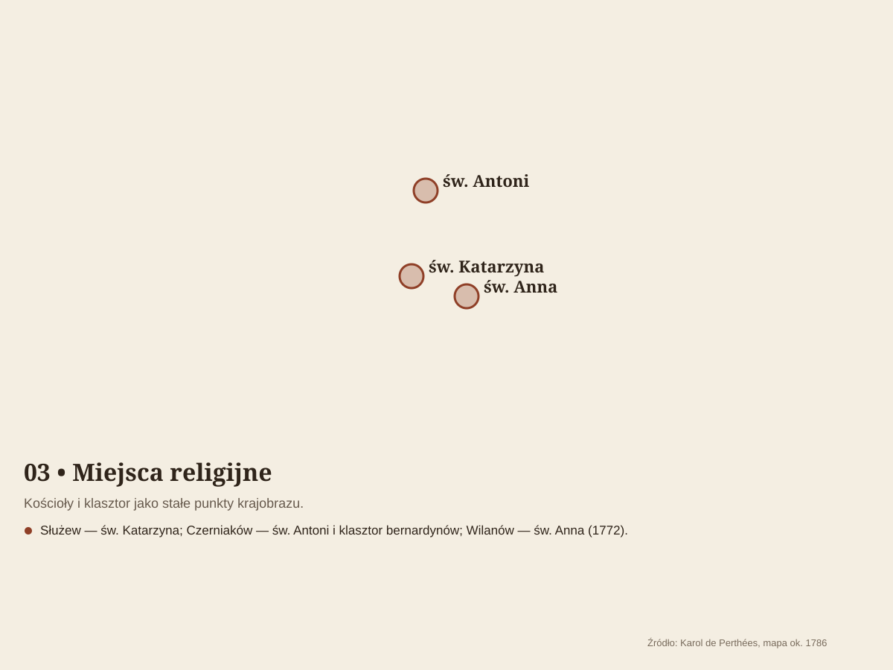
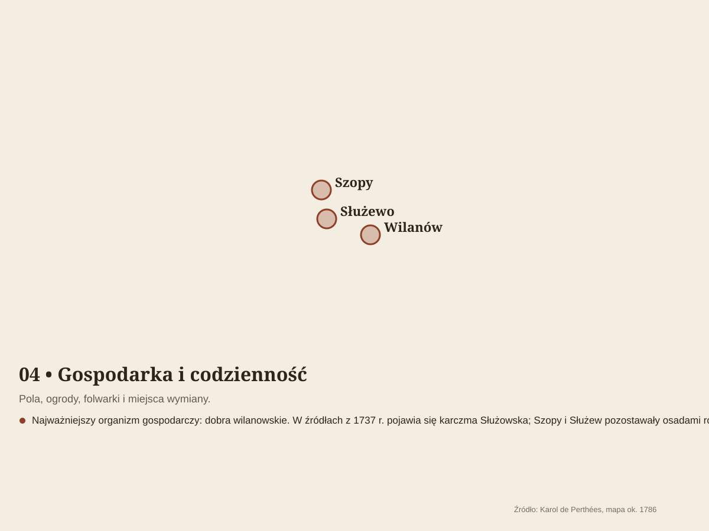
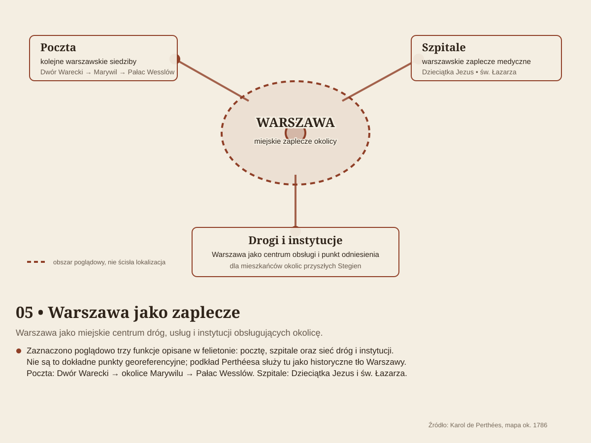
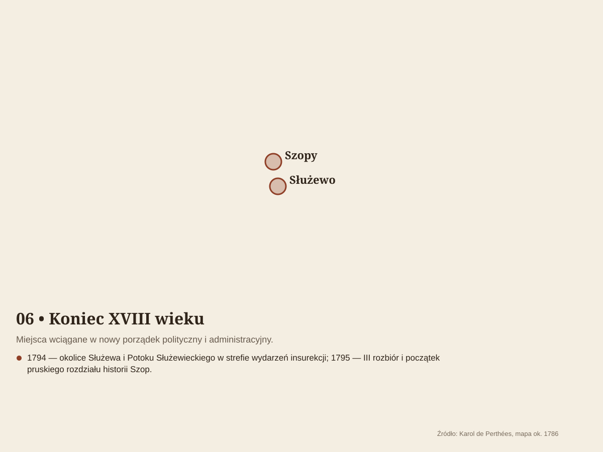

Pierwej, nim domy i drogi nasze stanęły, ziemia ta już swoją miała historię — poznajmy ją.
Zanim pojawiły się osiedla, ulice i ruchliwe skrzyżowania, krajobraz południowej części dzisiejszej Warszawy wyglądał zupełnie inaczej. Były tu otwarte przestrzenie, lasy, podmokłe obniżenia terenu i doliny cieków wodnych. Ważnym elementem tego krajobrazu była dolina Potoku Służewieckiego — naturalne obniżenie, które przez wieki wpływało na sposób użytkowania okolicznych ziem.
Dziś znamy ten teren między innymi jako Dolinkę Służewską, z alejkami, trawnikami i zielenią otoczoną miejską zabudową. Łatwo zapomnieć, że zanim człowiek zaczął przekształcać okolicę na wielką skalę, to właśnie ukształtowanie terenu i dostęp do wody współdecydowały o tym, gdzie można było znaleźć pożywienie, uprawiać ziemię i założyć osadę.
Zanim pojawiły się wsie
Ludzie korzystali z terenów dzisiejszej Warszawy na długo przed powstaniem miasta. Świadczą o tym odkrywane przez archeologów pozostałości dawnych narzędzi, naczyń, osad i miejsc pochówku. Każde takie znalezisko jest drobnym śladem świata, który nie pozostawił po sobie pisanych kronik.
Również w południowej części Warszawy odkrywano ślady pradziejowego osadnictwa. Warto jednak zachować ostrożność: znaleziska z Służewa, Wilanowa czy Sadyby opowiadają o przeszłości całej okolicy, ale nie muszą oznaczać, że podobne osady znajdowały się dokładnie na terenie dzisiejszych Stegien.
Nie był to zresztą świat jednej wielkiej osady rozciągającej się od dzisiejszego Mokotowa aż po Wisłę. Ludzie osiedlali się w różnych miejscach, korzystali z zasobów przyrody, a niektóre miejsca zamieszkiwali dłużej, inne zaś opuszczali. Z upływem czasu rozwijały się rolnictwo i hodowla, a krajobraz coraz mocniej nosił ślady ludzkiej działalności.
Po dawnych społecznościach pozostały także cmentarzyska. Znaleziska archeologiczne z okolic Sadyby wiążą się między innymi z kulturą łużycką i kulturą grobów kloszowych. To świadectwa życia ludzi, którzy zamieszkiwali te tereny wiele pokoleń przed powstaniem Warszawy. Ich codzienność była odmienna od naszej, lecz podobnie jak my musieli korzystać z otaczającej ich przestrzeni i dostosowywać się do jej warunków.
Służew wkracza do historii
Pradzieje poznajemy przede wszystkim dzięki archeologii. W średniowieczu pojawia się nowe źródło wiedzy: dokumenty, w których zapisano nazwy miejscowości, nadania ziemi i stosunki własnościowe. Właśnie wtedy możemy zacząć opowiadać historię okolicy bardziej konkretnie.
Jednym z najważniejszych punktów odniesienia jest Służew. Najstarsza znana wzmianka o tej miejscowości pochodzi z 1238 roku. Służew był już wówczas osadą o ugruntowanej pozycji, z kościołem i parafią. W kolejnych latach zmieniała się przynależność własnościowa wsi, a w 1245 roku książę Konrad I nadał ją komesowi Gotardowi.
Trzeba pamiętać, jak odległy był to czas. Warszawa nie była jeszcze miastem w kształcie, który kojarzymy z jej późniejszymi dziejami. Nie istniały dzisiejsze ulice Puławska, Sobieskiego czy Czerniakowska. Zamiast miejskiej zabudowy rozciągał się krajobraz osad, pól, lasów i dróg łączących sąsiednie miejscowości.
Służew nie był samotnym punktem na tej mapie. Wokół niego znajdowały się inne wsie i dobra, których mieszkańcy korzystali z okolicznych ziem. Z czasem dokumenty zaczęły utrwalać nazwy tych miejscowości, granice majątków oraz ustalenia między właścicielami. Dzięki nim możemy dziś odtworzyć część dawnego układu osadniczego.
Krajobraz, który poprzedził miasto
Średniowiecznej okolicy nie należy wyobrażać sobie jako miasta, któremu brakowało jedynie brukowanych ulic. Był to przede wszystkim krajobraz wiejski. Osady rozdzielały pola, łąki, zarośla i lasy, a drogi prowadziły między miejscami zamieszkania, przez tereny dogodniejsze do przejścia.
Ważną rolę odgrywała woda. Dolina Potoku Służewieckiego i skarpa wiślana były elementami krajobrazu, z którymi człowiek musiał się liczyć. Ukształtowanie terenu wpływało na możliwości osiedlania się i użytkowania ziemi, choć sam wygląd okolicy zmieniał się na przestrzeni wieków.
Dawny świat nie zniknął bez śladu. Czasem przypomina o sobie w nazwie miejscowości, czasem w zapisie starego dokumentu, a czasem w przedmiocie wydobytym z ziemi. Nie zawsze potrafimy wskazać dokładne miejsce, w którym przed wiekami żyli ludzie. Możemy jednak dostrzec, że historia tej części Warszawy zaczęła się na długo przed powstaniem współczesnych osiedli.
Zanim pojawiły się Stegny, istniał już krajobraz, w którym rozwijały się osady i kształtowały sąsiedzkie związki. Służew jest jednym z pierwszych miejsc, których historię możemy uchwycić dzięki średniowiecznym dokumentom. Od niego warto rozpocząć dalszą opowieść — o sąsiednich wsiach, ich mieszkańcach, ziemi, którą uprawiali, i drogach, które łączyły ich światy.
Bibliografia
- Słownik historyczno-geograficzny ziemi warszawskiej w średniowieczu, Instytut Historii PAN — hasło „Służew”. Otwórz hasło.
- Państwowe Muzeum Archeologiczne w Warszawie — materiały dotyczące stanowisk archeologicznych. Baza stanowisk.
- Zarząd Zieleni m.st. Warszawy — materiały o Parku Dolinka Służewska.
03Stegny przed Stegnami — wiek XV
Zanim tu domy i drogi nasze pobudowano, miejsce to już dzieje swoje miało — poznajmyż je.
1. Krajobraz okolicy przyszłych Stegien
O XV wieku w okolicy dzisiejszych Stegien nie opowiada nam jedna kronika ani opis całej wsi. Wiedzę składamy z rozproszonych zapisów, przede wszystkim dotyczących własności, granic i nazw sąsiednich miejscowości. Nie mamy podstaw, by przedstawiać Stegny jako odrębną wieś o znanych granicach w XV stuleciu. „Okolica przyszłych Stegien” to współczesne określenie obszaru, nie nazwa, którą można bezpośrednio przypisać ówczesnym dokumentom.
Źródła pozwalają zobaczyć fragmenty krajobrazu: pola, gaje, pastwiska i miejsca wymieniane przy rozgraniczaniu dóbr. Nie dają jednak pełnej mapy ani podstaw do odtworzenia położenia każdej zagrody, drogi czy granicy. Tam, gdzie zapis jest niejednoznaczny, należy zachować tę niepewność zamiast uzupełniać obraz domysłem.
2. Szopy, Służew, Czerniaków, Siekierki i Wilanów
Nazwy sąsiednich osad pomagają określić historyczny kontekst obszaru, ale nie oznaczają, że wszystkie te miejsca zostały opisane w źródłach XV wieku z jednakową dokładnością. Najlepiej udokumentowanym punktem tej opowieści jest Służew. Zapis z 1424 roku oraz wzmianka z 1458 roku dotycząca granic Służewa, Służewca i Jemielina pozwalają mówić o konkretnych nazwach i stosunkach własnościowych. Ich szczegółowa interpretacja powinna opierać się na edycji źródła, a nie na samym współczesnym brzmieniu nazw.
Służewiec i Jemielino pojawiają się w przekazach związanych z podziałami dóbr. Zapis z 1468 roku wiąże Milanowo — późniejszy Wilanów — z opisem granic Służewa i Czerniakowa. Takie wzmianki świadczą o sąsiedztwie i znaczeniu granic, ale same nie pozwalają odtworzyć całej sieci osad ani dokładnego przebiegu ich ziem.
W odniesieniu do Szop, Siekierek i poszczególnych części Czerniakowa trzeba sprawdzać każde twierdzenie w źródle dotyczącym właściwego miejsca i czasu. Późniejsze opisy tych miejscowości nie mogą automatycznie służyć jako dowód na ich wygląd, strukturę czy granice w XV wieku.
3. Ludzie i wiara
Średniowieczne dokumenty częściej odnotowują właścicieli, dziedziczenie i spory o ziemię niż codzienne doświadczenia zwykłych mieszkańców. Dzięki nim można czasem poznać imiona osób uczestniczących w podziale majątku, ale nie daje to pełnego obrazu ludności ani jej relacji społecznych.
Kościół św. Katarzyny na Służewie jest ważnym elementem średniowiecznej historii okolicy. Nie należy jednak na podstawie samego istnienia parafii przesądzać, jak często przybywali do niej mieszkańcy każdej sąsiedniej osady ani jak wyglądały ich praktyki religijne. Bez dodatkowych świadectw nie da się też wiarygodnie opisać wyznania, pochodzenia czy życia konkretnych osób poza tym, co zapisano w źródłach.
4. Gospodarstwa, pola i ogrody
Wzmianki o polach, gajach i pastwiskach pokazują, że ziemia miała różne funkcje i mogła być dzielona między właścicieli, a niektóre obszary pozostawały do wspólnego użytkowania. W zapisie z 1429 roku dotyczącym podziału dziedzictwa Jana Łuczyca ze Służewa i Mikołaja Bryszka wymieniono gaje i płosy, a pastwiska pozostawiono wspólne. To konkretny przykład z dokumentu, nie opis wszystkich gospodarstw w okolicy.
Na tej podstawie można ostrożnie mówić o znaczeniu uprawy ziemi i praw do jej użytkowania. Nie znamy jednak pełnego wyposażenia typowego gospodarstwa, dokładnych upraw, liczby zwierząt ani codziennego rozkładu prac w poszczególnych wsiach. Takie szczegóły wymagają osobnych źródeł, których nie zastąpi ogólna wiedza o średniowiecznym rolnictwie.
5. Handel i miejsca sprzedaży
Dokumenty omawiane w tym felietonie nie dają wystarczającej podstawy, by wskazać konkretne targowisko lub stałe miejsce sprzedaży na terenie przyszłych Stegien w XV wieku. Bliskość Warszawy nie wystarcza sama w sobie, by określić, co mieszkańcy danej osady sprzedawali, dokąd jeździli z towarem ani jak często uczestniczyli w targach.
Nie należy również przenosić do XV wieku karczm, nazw miejsc czy organizacji handlu znanych dopiero z późniejszych zapisów. Dopóki nie wskażemy konkretnego średniowiecznego świadectwa, szczegóły lokalnego handlu pozostają niewiadome. To ograniczenie źródeł, a nie dowód, że wymiana towarów w ogóle nie istniała.
6. Poczta i droga listu
Dla XV-wiecznej okolicy przyszłych Stegien nie mamy tu potwierdzenia istnienia urzędu pocztowego ani regularnej służby doręczającej listy w późniejszym, instytucjonalnym znaczeniu. Dlatego nie byłoby właściwe opisywać lokalnej poczty, jej przystanków czy typowej drogi listu tak, jak można to zrobić dla późniejszych stuleci.
Wiadomości i dokumenty mogły przemieszczać się wraz z osobami podróżującymi w sprawach majątkowych, sądowych lub kościelnych, ale bez zachowanego świadectwa dotyczącego konkretnej przesyłki jest to jedynie ogólna możliwość. Nie znamy trasy listu mieszkańca Szop, Służewa czy Czerniakowa ani nie możemy wskazać, kto miałby go doręczyć. W tym temacie uczciwą odpowiedzią jest obecnie brak wystarczających danych.
7. Zdrowie i choroba
Dokumenty własnościowe i graniczne, na których opiera się ta opowieść, nie pozwalają odtworzyć stanu zdrowia mieszkańców, sposobów leczenia ani lokalnych epidemii. Nie ma podstaw, by wskazywać konkretnego lekarza, aptekę, szpital lub zorganizowaną formę pomocy medycznej na terenie przyszłych Stegien w XV wieku bez osobnego źródła potwierdzającego taką informację.
Nie oznacza to, że choroby czy opieka nad chorymi były nieobecne w życiu mieszkańców. Oznacza tylko, że nie potrafimy ich szczegółowo opisać na podstawie świadectw wykorzystanych w tym felietonie. Ogólna wiedza o średniowieczu nie może zastąpić lokalnego dowodu.
Zanim pojawiły się Stegny, istniał już krajobraz, w którym rozwijały się osady i kształtowały sąsiedzkie związki. Służew jest jednym z pierwszych miejsc, których historię możemy uchwycić dzięki średniowiecznym dokumentom. Od niego warto rozpocząć dalszą opowieść — o sąsiednich wsiach, ich mieszkańcach, ziemi, którą uprawiali, i drogach, które łączyły ich światy.
Bibliografia
- Słownik historyczno-geograficzny ziem polskich w średniowieczu, Instytut Historii PAN — hasło „Służew”. Otwórz hasło.
- Piber M., Służew średniowieczny. Dzieje parafii i wsi Służew w ziemi warszawskiej, Warszawa 2001.
- Kartoteka powiatu warszawskiego w średniowieczu: Warszawa–Służew, Instytut Historii PAN. Otwórz opis zasobu.
04
Zanim powstały nasze domy, ulice i osiedle, była tu już historia — poznajmy ją.
05Stegny przed Stegnami — XVIII wiek
Nim jeszcze powstały nasze domy, ulice i osiedla, miejsce to miało już swoją historię — poznajmy ją.
Mapa XVIII wieku — sześć warstw

1. Przyszłe Stegny — najważniejsze osady i miejsca bezpośrednio związane z krajobrazem przyszłych Stegien. 
2. Drogi i połączenia — główne kierunki ruchu oraz przeprawa przez Wisłę. 
3. Miejsca religijne — św. Katarzyna, św. Antoni i św. Anna. 
4. Gospodarka i codzienność — pola, osady, dobra wilanowskie i karczma Służowska. 
5. Warszawa jako zaplecze — miejskie centrum dróg i instytucji opisanych w felietonie. 
6. Koniec XVIII wieku — Służew i Szopy na tle przemian lat 1794–1795. 1. Krajobraz okolicy przyszłych Stegien
W XVIII wieku nie istniało tu osiedle w dzisiejszym znaczeniu ani jedna miejscowość, której granice odpowiadałyby współczesnym Stegnom. Był to obszar wiejski, związany z kilkoma osadami, polami, łąkami, ogrodami i większymi dobrami ziemskimi. Określenie „okolica przyszłych Stegien” jest więc współczesnym skrótem opisowym, a nie historyczną nazwą jednostki osadniczej.
Ważnym elementem krajobrazu południowego Mokotowa była Skarpa Warszawska oraz zróżnicowane warunki wodne. Nie wszystkie dawne cieki, mokradła czy drogi da się odtworzyć z równą dokładnością. Mapę Karola de Perthéesa Okolica Warszawy w diametrze pięciu mil można wykorzystać do orientacyjnego poznania nazw i układu osadniczego, ale nie należy traktować jej jak dokładnego planu geodezyjnego. Opracowanie mapy wiąże się z około 1786 rokiem, a jej rytowanie nastąpiło później. (GEOHISTORIA)
2. Szopy, Służew, Czerniaków, Siekierki i Wilanów
Te nazwy pozwalają opisać sąsiednie części krajobrazu, nie zaś wyznaczyć jedną, wspólną granicę przyszłych Stegien. W XVIII wieku poszczególne osady różniły się położeniem, formą własności i związkiem z większymi majątkami. Źródła nie uzasadniają jednak przenoszenia na cały obszar szczegółów znanych tylko z jednej miejscowości.
Szopy były dawną osadą pod Warszawą. Nazw „Szopy Polskie” i „Szopy Niemieckie” nie należy automatycznie stosować do całego XVIII wieku: rozróżnienie to wiąże się z późniejszymi przemianami, szczególnie z okresem po III rozbiorze w 1795 roku. Dokładne datowanie utrwalania się nazw wymaga osobnego sprawdzenia w źródłach. (Szopy Polskie na Mokotowie)
Służew był starszą wsią z kościołem św. Katarzyny i pod koniec XVII wieku został włączony do dóbr wilanowskich. W XVIII stuleciu jego dzieje należy więc rozpatrywać także w kontekście większego majątku. (Historia Służewa)
Czerniaków wyróżniał się zespołem kościoła św. Antoniego z Padwy i klasztoru bernardynów, ufundowanym pod koniec XVII wieku. Położenie w pobliżu Wisły wpływało na krajobraz tej okolicy, ale szczegółów codziennego życia mieszkańców nie należy rekonstruować bez lokalnych zapisów.
Siekierki były związane z doliną Wisły. Mapa Perthéesa zaznacza w rejonie Augustówki i Siekierek miejsce opisane jako „Przewóz”. To wskazówka dotycząca przeprawy, nie wystarczający dowód na dokładny przebieg każdej trasy ani na niezmienność jej działania przez całe stulecie. (Historyczne warszawskie przeprawy przez Wisłę)
Wilanów był nie tylko wsią, lecz także centrum rozległych dóbr ziemskich z pałacem, ogrodami i zapleczem gospodarczym. Zmiany właścicieli majątku można opisać na podstawie źródeł dotyczących Wilanowa, ale nie dowodzą one same przez się, że każdy mieszkaniec pobliskich osad pracował dla dworu lub regularnie z niego korzystał.
3. Ludzie i wiara
Kościoły parafialne i klasztorne należały do ważnych punktów życia religijnego. W opisywanej okolicy szczególne znaczenie miały kościół św. Katarzyny na Służewie oraz zespół św. Antoniego w Czerniakowie. Były to miejsca kultu, ale także punkty odniesienia w przestrzeni okolicy.
Nie dysponujemy tu jednak kompletnym obrazem praktyk religijnych wszystkich mieszkańców ani dokumentacją pozwalającą opisać ich codzienne życie z jednakową szczegółowością. Informacje o parafii lub fundacji kościelnej nie mówią automatycznie, jak często przybywali tam mieszkańcy każdej z okolicznych osad.
Podobnie należy ostrożnie podchodzić do kwestii wyznania i pochodzenia ludności. Nie można przypisywać konkretnej osobie narodowości lub religii wyłącznie na podstawie nazwiska czy późniejszej nazwy osady. Kolonii Szop Niemieckich nie należy przedstawiać jako istniejącej przez cały XVIII wiek; jej powstanie wiąże się z przemianami po 1795 roku.
4. Gospodarstwa, pola i ogrody
Rolnictwo i użytkowanie ziemi były ważnymi elementami wiejskiego krajobrazu. Pola, łąki, ogrody, sady i pastwiska mogły służyć różnym celom, zależnie od położenia, własności i potrzeb gospodarstwa. Nie oznacza to jednak, że znamy dokładny układ każdego gospodarstwa ani rodzaj upraw w każdej osadzie.
Trzeba też rozróżniać niewielkie gospodarstwa od folwarków należących do większych dóbr. Wilanów stanowi przykład rozbudowanego zaplecza majątkowego, którego funkcjonowanie wymagało dostaw żywności, paszy, opału i pracy wielu osób. Szczegóły dotyczące poszczególnych gospodarstw należy podawać dopiero wtedy, gdy potwierdzają je inwentarze, rachunki lub inne źródła z odpowiedniego czasu.
Ogólny obraz dawnej wsi pozwala wyjaśnić, jak mogło wyglądać gospodarowanie, lecz nie zastępuje dokumentu opisującego konkretną zagrodę. W tym felietonie przykłady typowych zajęć są zatem tłem epoki, a nie spisem potwierdzonych zajęć wszystkich mieszkańców okolicy.
5. Handel i miejsca sprzedaży
Bliskość Warszawy stwarzała okolicznym mieszkańcom możliwość kontaktu z miejskim rynkiem. Nie możemy jednak bez źródeł określić, jakie towary sprzedawało każde gospodarstwo, jak często mieszkańcy jeździli do miasta ani na którym targu wystawiali swoje produkty.
Karczmy mogły pełnić funkcje gospody, miejsca odpoczynku i spotkań. W opracowaniach dotyczących dóbr wilanowskich pojawia się wzmianka o karczmie Służowskiej w 1737 roku. To świadectwo istnienia karczmy odnotowanej w źródle, ale nie wystarcza, by bez dodatkowych dowodów utożsamić ją z późniejszym budynkiem Żółtej Karczmy. Taki związek należy traktować jako hipotezę, nie ustalony fakt. (Wieś w mieście: Potok i Żółta Karczma; Żółta Karczma — Atlas Warszawy)
Warto oddzielić potwierdzone miejsca od ogólnej wiedzy o gospodarce epoki. Bez dokumentów nie należy wskazywać konkretnych punktów sprzedaży na terenie przyszłych Stegien ani opisywać ich godzin, asortymentu czy stałych klientów.
6. Poczta i droga listu
Warszawska poczta zmieniała w XVIII wieku swoje siedziby. Opracowania wymieniają między innymi okolice Marywilu, a później Pałac Wesslów. Tę chronologię można przedstawić jako historię instytucji miejskiej, nie zaś dowód na to, że mieszkańcy każdej wsi podwarszawskiej korzystali z niej w taki sam sposób.
Nie mamy potwierdzenia, że na terenie przyszłych Stegien działał urząd pocztowy albo regularny wiejski doręczyciel. Nie da się też bez konkretnego listu czy rejestru odtworzyć jednej typowej drogi korespondencji mieszkańca Szop, Służewa, Czerniakowa lub Siekierek. List mógł być przekazywany przez różne osoby, ale w odniesieniu do konkretnego przypadku byłoby to przypuszczenie.
Dlatego poczta pojawia się tu jako część szerszego warszawskiego systemu komunikacji. Dokładną drogę listu można opisać dopiero wtedy, gdy zachowało się świadectwo dotyczące nadawcy, adresata lub sposobu doręczenia.
7. Zdrowie i choroba
W XVIII wieku pomoc medyczna była znacznie mniej dostępna i skuteczna niż obecnie. W Warszawie działały instytucje opiekuńcze i szpitale, w tym Szpital Dzieciątka Jezus oraz Szpital św. Łazarza. Ich istnienie pokazuje, że w mieście rozwijały się zorganizowane formy pomocy, lecz nie dowodzi, że mieszkańcy okolicznych wsi mieli do nich łatwy lub regularny dostęp.
W przypadku mieszkańców przyszłych Stegien nie należy bez źródeł wskazywać konkretnych lekarzy, aptek, sposobów leczenia ani lokalnych epidemii. Nie można również opisywać organizacji pomocy przy parafii służewskiej jako pewnego faktu, jeśli nie znamy dokumentu potwierdzającego jej formę i miejsce.
Odległość od miasta, stan dróg i możliwość skorzystania z transportu mogły wpływać na dostęp do pomocy, ale w odniesieniu do konkretnej osoby lub zdarzenia pozostają to ogólne uwarunkowania, a nie odtworzona historia przypadku. Brak zapisu o chorobie nie oznacza, że jej nie było — oznacza jedynie, że nie powinniśmy dopisywać szczegółów bez świadectwa.
Na koniec — najważniejsza rzecz
Stegny nie pojawiły się nagle.
Najpierw była ziemia, potem wsie i majątki, drogi i gospodarstwa, a dopiero wiele później miasto.
W XVIII wieku nie istniała jeszcze jedna miejscowość, którą można byłoby nazwać współczesnymi Stegnami. Istniał natomiast krajobraz przyszłych Stegien: Szopy, Służew, Czerniaków i Siekierki, rozległe dobra Wilanowa, pola, ogrody, łąki, drogi, cieki wodne i rozproszone gospodarstwa.
Były kościoły — św. Katarzyny na Służewie, św. Antoniego na Czerniakowie i św. Anny w Wilanowie. Była karczma Służowska. Była droga prowadząca z Wilanowa przez Służew ku traktowi Puławskiemu. Były też warszawskie instytucje, z którymi mieszkańcy okolicy mieli kontakt: poczta, szpitale, kościół ewangelicki i miejski rynek.
A więc gdy dziś przechodzimy ulicą Potoki, Bocheńską czy w stronę Wilanowa, warto spojrzeć wyobraźnią pod asfalt.
Nie trzeba szukać gotowego „osiedla Stegny”.
Trzeba zobaczyć ziemię, pola, wodę, drogę, małe gospodarstwo i człowieka, który wraca z pracy.
Bo zanim pojawiły się Stegny, istniała już okolica, z której Stegny dopiero miały powstać.